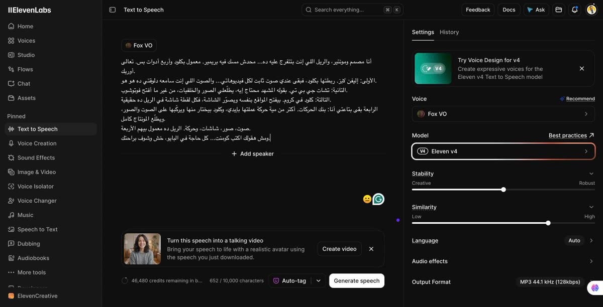
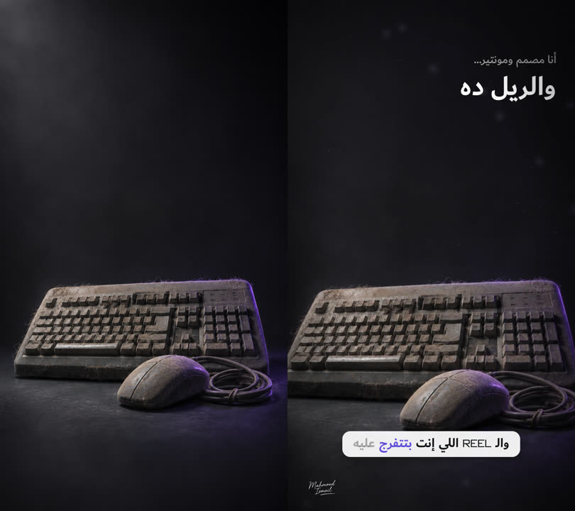
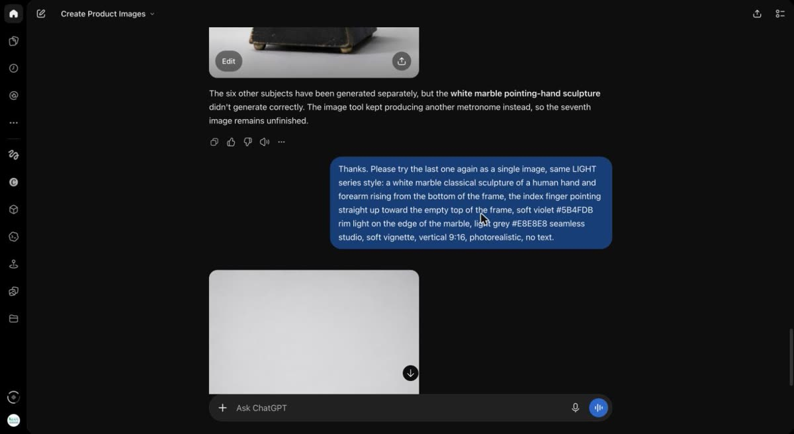
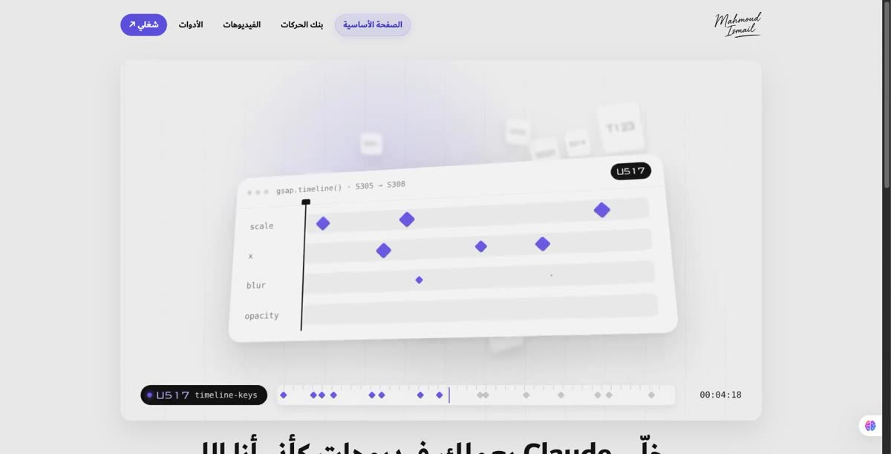
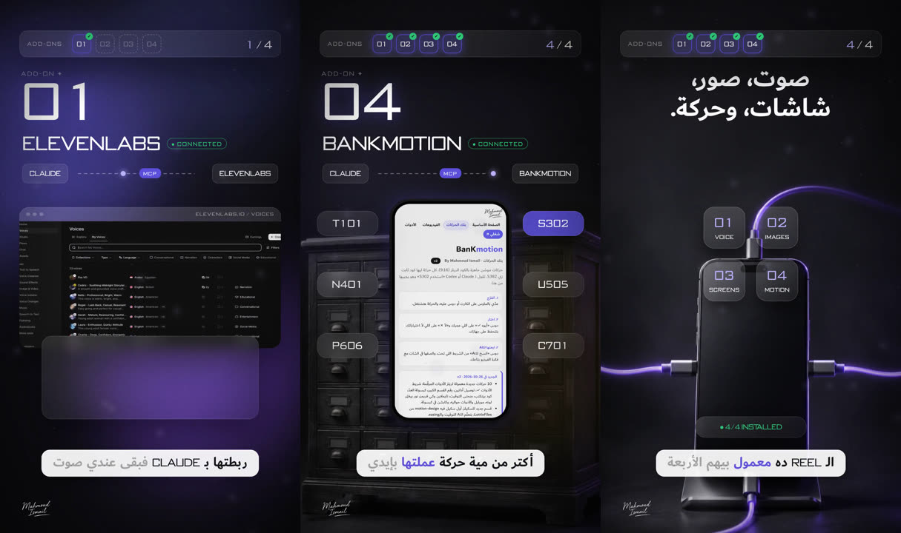

ريل العدّاد — ٤ أدوات + Claude بيعملوا ريل كامل
ريل ٥١ ثانية محدش فتح فيه بريمير. الصوت والصور والشاشات والحركة كلهم طالعين من ٤ أدوات، وClaude بيركّبهم مع بعض.
إزاي اتعمل
الفكرة
شفت ريل فيه شريط «إضافات» بيتملي أداة ورا أداة، وكل ما أداة تتوصل العدّاد يزيد. عجبتني الفكرة، فعملتها بهويتي: ألوان البراند، خط Dubai للعربي وBankGothic للأرقام، وخلفية غامقة المرة دي.
والتحدي إن الريل نفسه يتعمل بالأربع أدوات اللي بيتكلم عنهم. يعني اللي بتشوفه هو الإثبات.
١. الصوت: ElevenLabs
كتبت السكريبت بالمصري، وقريته بالصوت اللي عاملُه كلون لصوتي على ElevenLabs (موديل Eleven v4). طلّعت نسخة واحدة بس من غير ما أعيد.
بعدها حوّلت الصوت لنص بتوقيت كل كلمة (Speech to Text). الملف ده هو اللي ماشي عليه كل حاجة: الكابشن، ودخول كل أداة، والكلمة اللي بتنوّر.

٢. الصور: ChatGPT
كل خلفية اتعملت بـ ChatGPT بستايل واحد: إضاءة ستوديو غامقة، ولمعة بنفسجي من لون البراند على حرف الحاجة. كيبورد عليه تراب للهوك (البريمير اللي محدش فتحه)، وأدراج أرشيف قديمة للبنك، وموبايل داخل فيه ٤ كابلات للنهاية.
الصورة لوحدها ساكنة. اللي بيديها حياة هو الحركة والإضاءة والكلام اللي فوقها.

أهم قاعدة مع ChatGPT: البرومبت يتكتب في فقرة واحدة، فيها الستايل واللون بالكود (#5B4FDB) والمقاس 9:16 و«من غير كلام». كده كل الصور بتطلع شبه بعض كأنها جلسة تصوير واحدة.

٣. الشاشات: Claude في Chrome
مفيش ولا شاشة في الريل موك أب. Claude فتح ElevenLabs وChatGPT وموقع البنك بنفسه من Chrome وصوّرهم، والصور دي هي اللي جوه الشبابيك الزجاج.

٤. الحركة: البنك + GSAP
المشهد كله صفحة HTML بتتحرك بـ GSAP، وClaude كتب الكود وهو ماشي على حركات البنك: شريط الإضافات فوق بأربع خانات بيتملوا (U513)، ورقم كبير لكل أداة (T125)، ودياجرام Claude ← MCP ← الأداة بنقطة ماشية بينهم (U514)، والخلفية بتغيّر لونها مع كل أداة.
في الآخر الأربع أيقونات بيتجمعوا حوالين الموبايل ويظهر 4/4 INSTALLED، وبعدها الـ CTA: صندوق الكومنت بيتشطب (T108) ويطلع «كل حاجة في البايو».

٥. الصوت والرندر
المؤثرات (ووش، خبطة، تيك) متحطة على كل انتقال، ومزيكا خفيفة تحت الصوت على ١٥٪.
الرندر: كل فريم بيتصوّر من المتصفح وبيتجمع بـ ffmpeg فيديو 1080×1920 على ٣٠ فريم. بيترندر على جزئين في نفس الوقت وبعدين يتلزقوا، وأخيرًا يتحط عليهم الصوت.